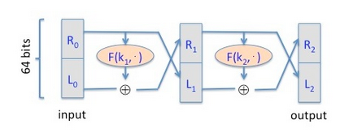
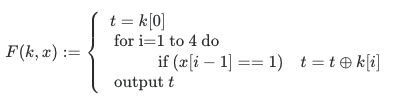

Let us see what goes wrong when a stream cipher key is used more than once. Below are eleven hex-encoded ciphertexts that are the result of encrypting eleven plaintexts with a stream cipher, all with the same stream cipher key. Your goal is to decrypt the last ciphertext, and submit the secret message within it as solution.
See input texts See target text
If we apply next formula to two different CTs (cipher texts), encrypted with the same key k, we get XOR of plain messages:
c1 ⊕ c2 = (m1 ⊕ k) ⊕ (m2 ⊕ k) = m1 ⊕ m2.
This looks like the m1 is encrypted with the key that equals m2.
So I've started looking for the CT in the given set of CTs, which has the smallest length, so that it looks like we have a text encrypted with the key of length, smaller than the message length.
See the process7. Suppose you are told that the one time pad encryption of the message "attack at dawn" is
(the plaintext letters are encoded as 8-bit ASCII and the given ciphertext is written in hex). What would be the one time pad encryption of the message "attack at dusk" under the same OTP key?
4. Recall that the Luby-Rackoff theorem discussed in The Data Encryption Standard lecture states that applying a three round Feistel network to a secure PRF gives a secure block cipher. Let's see what goes wrong if we only use a two round Feistel.
Let F: K × {0,1}32 -> {0,1}32 be a secure PRF.
Recall that a 2-round Feistel defines the following PRP
Let F2: K2 × {0,1}64 -> {0,1}64 be a secure PRF.

Here R0 is the right 32 bits of the 64-bit input and L0 is the left 32 bits.
One of the following lines is the output of this PRP F2 using a random key, while the other three are the output of a truly random permutation f: {0,1}64 × {0,1}64 -> {0,1}64.
All 64-bit outputs are encoded as 16 hex characters.
Can you say which is the output of the PRP? Note that since you are able to distinguish the output of F2 from random, F2 is not a secure block cipher, which is what we wanted to show.
Hint: First argue that there is a detectable pattern in the xor of F2(˙, 064) and F2(˙, 132032). Then try to detect this pattern in the given outputs.
064 ⊕ 132032
9. Let R := {0,1}4 and consider the following PRF F : R5 × R -> R defined as follows:

That is, the key is k = (k[0],k[1],k[2],k[3],k[4]) in R5 and the function at, for example, 0101 is defined as F(k,0101) = k[0] ⊕ k[2] ⊕ k[4].
For a random key k unknown to you, you learn that
F(k,0110) = 0011 and F(k,0101) = 1010 and F(k, 1110) = 0110.
What is the value of F(k, 1101)?
Note that since you are able to predict the function at a new point, this PRF is insecure.